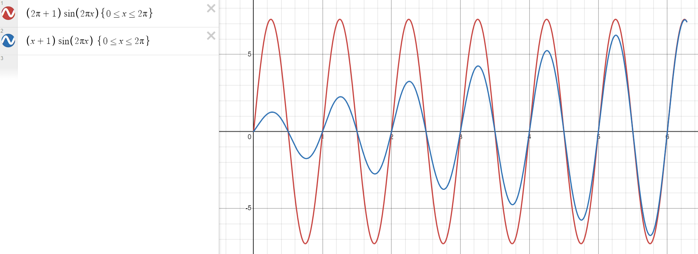

While you can use some ad-hoc methods, try to do this question structurally in a way that always works. First, calculate $\nabla f$. What can you do with this? Is determining the critical points of $f$ enough?
\[ \nabla f(x,y) = \begin{pmatrix} \sin(xy) + y\cdot(x+1)\cos(xy) \\ x(x+1)\cos(xy) \end{pmatrix} \] Setting $\nabla f(x,y) = 0$ will yield the critical points. \[ x(x+1)\cos(xy) = 0 \implies \begin{cases} x = 0, \quad \mathrm{or} \\ x + 1 = 0, \quad \mathrm{or} \\ \cos(xy) = 0 \end{cases} \implies \begin{cases} x = 0, \quad \mathrm{or} \\ x = -1, \quad \mathrm{or} \\ xy = \frac{k\pi}{2}, \quad k = 1,3,5,\ldots \end{cases} \] Since $(x,y)$ must be in $K$ we only have the cases:
- $x=0$
- $xy = \frac{\pi}{2}$
- $xy = \frac{3\pi}{2}$
Now substitute these values in $\sin(xy) + y\cdot(x+1)\cos(xy) = 0$.
- $x=0$: $\sin(0) + y\cdot 1\cdot \cos(0) = 0 \implies 0 + y = 0 \implies y = 0$
- $xy = \frac{\pi}{2}$: $\sin(\frac{\pi}{2}) + y\cdot(x+1)\cos(\frac{\pi}{2}) = 0 \implies 1 + 0 = 0$, contradiction!
- $xy = \frac{3\pi}{2}$: $\sin(\frac{3\pi}{2}) + y\cdot(x+1)\cos(\frac{3\pi}{2}) = 0 \implies -1 + 0 = 0$, contradiction!
So we get a critical point at $(0, 0)$, at which $f(0,0) = 0$. Are we done?
On $y=2\pi$: $f(x, 2\pi) = (x+1)\sin(2\pi x)$. While we could try and find the maxima/minima of this function, we can save a lot of time by noticing that for $0 \leq x \leq 2\pi$ we have \[ |(x+1)\sin(2\pi x)| \leq |(2\pi+1)\sin(2\pi x)|, \] so this case cannot produce any new extreme values compared to the case $x=2\pi$.

Since the question only asks for the maximum/minimum values themselves and not where they assumed, the final answer is:
- maximum: $2\pi+1$
- minimum: $-2\pi-1$